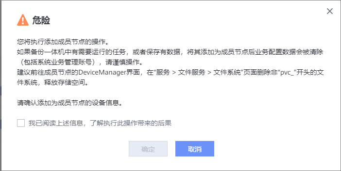

请参考本节操作添加成员节点。添加成员节点后，备份副本可以存储在成员节点对应的备份存储上。对于1.6.0及后续版本，“内部通信网络平面”更名为“内部通信网络”，本节以1.5.0版本为例进行描述。
前提条件
- 主节点已添加内部通信网络平面，且待添加的成员节点至少预留2个IP地址。
- （适用于1.6.0及后续版本）待升级的备份存储设备已添加内部通信网络平面。
- 待添加的成员节点与主节点为相同版本。
- 待添加的成员节点未被添加到其他复制集群/多域集群中。
- （适用于1.5.0版本）待添加的成员节点对应的本地存储未被添加为备份存储单元。
- （适用于1.6.0及后续版本）待添加的成员节点对应的本地存储未被添加为备份存储设备。
- 待添加的成员节点的内部通信网络平面IP地址需要与主节点内部通信网络平面IP地址连通。
- 待添加的成员节点上没有正在进行的任务。
- 已下载成员节点“服务端证书”类型的CA证书，并导入主节点，类型选择为“备份集群/多域集群/复制集群”。导入CA证书的操作请参见《OceanProtect DataBackup 1.5.0-1.6.0 安全配置指南》中的“下载证书”和“导入证书”章节。
- 确保待添加的成员节点环境为新部署环境：
- 执行过数据保护业务的环境则需要重装备份软件后重新初始化，未执行过其他任何操作。请检查并确保未进行以下操作：
- 添加外部集群（复制集群/管理集群/被管理集群）。
- 添加归档存储。
- 添加存储设备。
- 创建备份存储单元组。
- 设置SFTP服务。
- 注册客户端。
- 创建SLA。
- 注册相关特性的保护资源。
- 创建或正在执行备份、复制、归档、恢复、证书导入等任务。
- 成员节点被其他集群添加为备份存储设备或者复制集群、管理集群、被管理集群等。
注意事项
如果OceanProtect上有需要运行的任务，或者保存有数据，将其添加为成员节点后业务配置数据会被清除，请谨慎操作。
操作步骤
- 选择。
- 选择“备份集群”。
- 单击“创建”。填写待添加备份节点的信息。相关参数说明请参见表1。
表1 备份节点参数说明参数
|
说明
|
|---|
名称
|
填写待添加备份节点的名称。
|
IP地址
|
备份节点的管理IP地址。
|
端口
|
备份节点的管理端口。
默认端口为25081。
|
用户名
|
备份节点的系统管理员用户名。例如sysadmin。
|
密码
|
备份节点的系统管理员密码。
|
内部通信网络平面名称
|
备份节点的内部通信网络平面名称。该网络平面可以复用备份网络平面。
|
- 单击“确定”。
- 系统弹出“危险”提示框，确认提示信息无误后，勾选“我已阅读上述信息，了解执行此操作带来的后果”，单击“确定”。成员节点添加完成后，不支持登录成员节点的管理界面。
